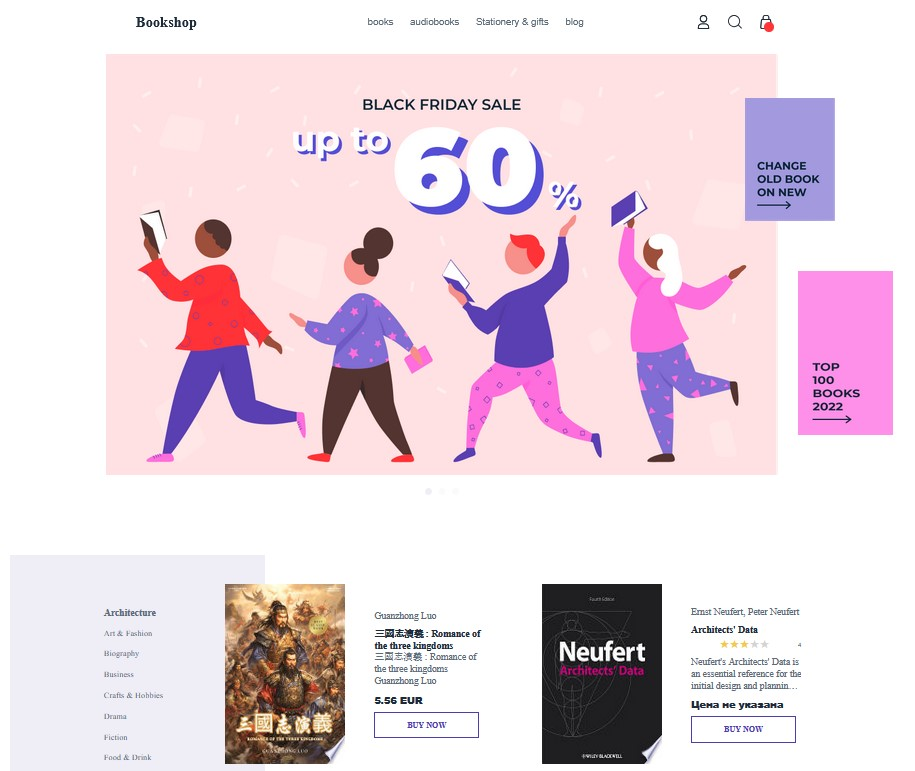

Dost — live 3D AI company website
Browser-rendered 3D hero with 136 metallic cubes, interactive service objects, real-time reflections, GLSL raymarching energy, multilingual content and voice tracks.
CREATIVE TECHNOLOGY · GENERATIVE AI · PRODUCT
Creative Technologist & AI Creative Producer
I turn ideas into digital products, interactive experiences and cinematic AI stories — from concept and UX to code, automation, generative visuals and final production.
SELECTED DEVELOPMENT WORK
Strongest cases first: interactive web, product systems, automation and production-ready front-end.
Browser-rendered 3D hero with 136 metallic cubes, interactive service objects, real-time reflections, GLSL raymarching energy, multilingual content and voice tracks.
Construction-management CRM prototype with role-based flows, operational screens and end-to-end testing. Built as a practical business product rather than a demo landing page.
Scheduled Telegram product with subscriber management, morning/day/evening content, guest-author flow, response logic, source tracking, Supabase storage and automated tests.

Task workflow across Backlog, Ready, In Progress and Finished with routed task details and persistent state in localStorage.

AI-assisted Telegram translator with polling/webhook modes and deploy-ready configuration.
CAPABILITIES
Interactive concepts, prototyping, creative coding, 3D web experiences.
HTML/CSS/SCSS, JavaScript, React, Next.js, responsive UI, component logic.
AI-assisted development, Telegram bots, workflow automation, API-connected experiences.
Concept, storyboard, generative image/video, editing, sound and campaign visuals.
AI CREATIVE / SOFIERE STUDIO
I develop AI films and branded visual concepts from creative research and script to generation, edit, sound and final delivery. This is not a separate identity — it is the creative-production side of my Creative Technologist practice.
TRAINING & CERTIFICATES
AVAILABLE FOR REMOTE / FREELANCE PROJECTS